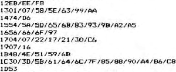

Nascom Newsletter |
Volume 2 · Number 6 · January 1983 |
| Page 13 of 41 |
|---|
In his excellent article on labels for Xtal BASIC in Vol. 2, No. 4, Stephen Hope calls for reports on bugs in Xtal. I wasn’t going to respond because I have had such fun and practical use from it in the last 3 and a half years that it seems like treachery to slight it. The program is excellent and it was two years before I uncovered a single bug. What prompts this letter is the Two Minutes it took to find a bug in the prestigious M-BASIC. Discussions at my local club suggest that there are plently more!
So, having made it clear that I think that Xtal is in a class of its own, here is my solitary bug:–
In expotential, the interpreter accepts an expression like
4.6789**O.5 (O instead of 0)
and returns a value of 1 (ie. the figure to the power zero)
Just for the record, the “2 minute bug” in M-BASIC5, try this:–
10 DEFBL A,B,C
20 A=3:B=4:C=B/A
30 PRINT C
As expected, C prints out as 1.3 recurring to 15 places. Now,try replacing line 10 with ‘DEFINT A,B: DEFBL C’ and see what happens – the last eight places are rubbish! This begs the question, why do people want double precision? To do maths of course. What functions does one use in maths? Why the numeric ones of course. (Yes, like log, sin, etc). And what is only available in single precision in M-BASIC? Yes, you’ve quessed!!!! Incredible but true, the internal functions are only single precision – a PET is as good at maths as that.
Now for something more constructive. Here are the addresses to change to get Wordease working under CP/M on a Nascom with its screen mapped to F800H:–

And of course change 1010 to 7D if you have made a Nas sys 3 version of MONITOR.COM (what better name for this than NAS.COM?). With these mods. one can read in old tapes and print them, or save them to disk using the NAS.COM routines. I am working on a full CP/M version, perhaps next Xmas…
| Page 13 of 41 |
|---|